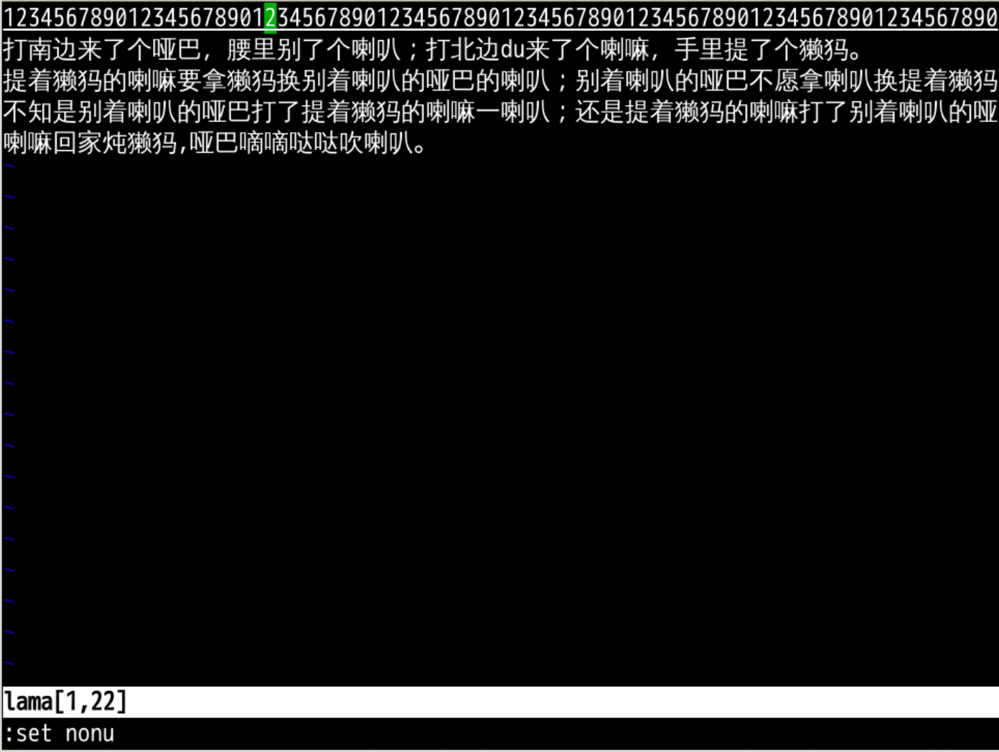
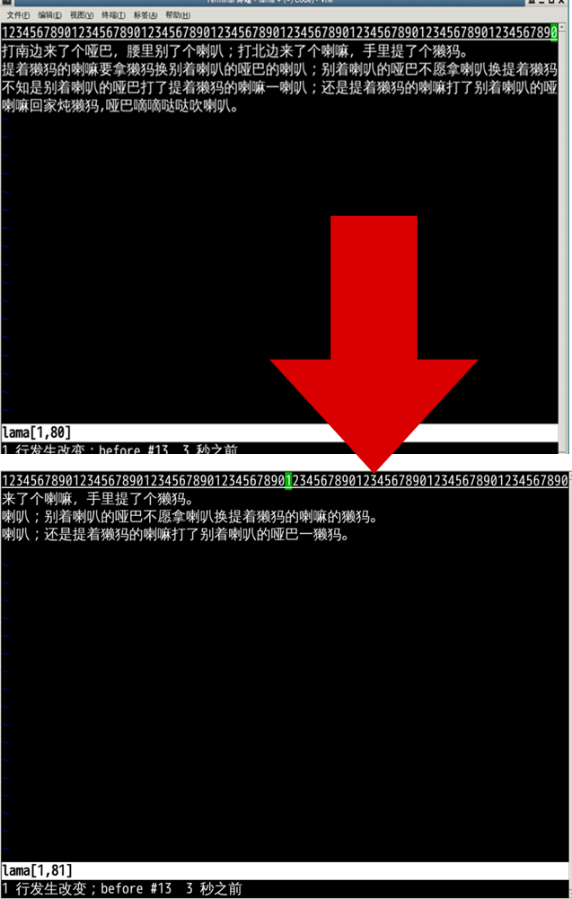
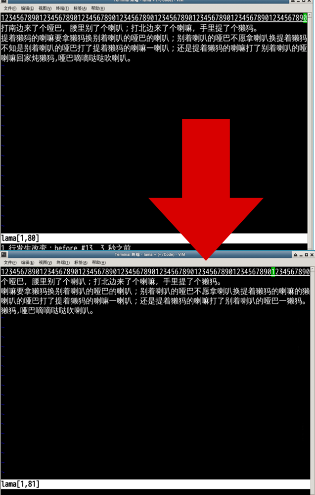
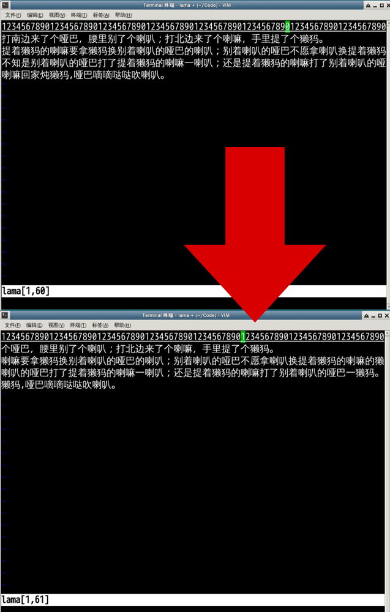
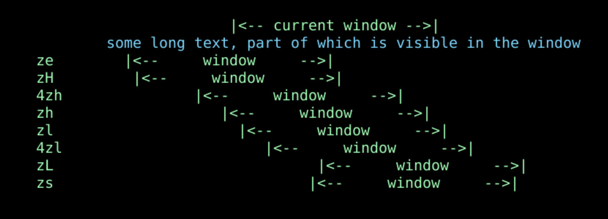
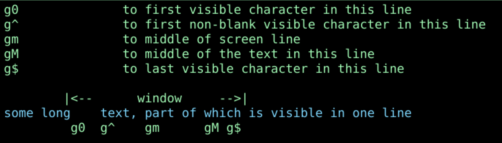
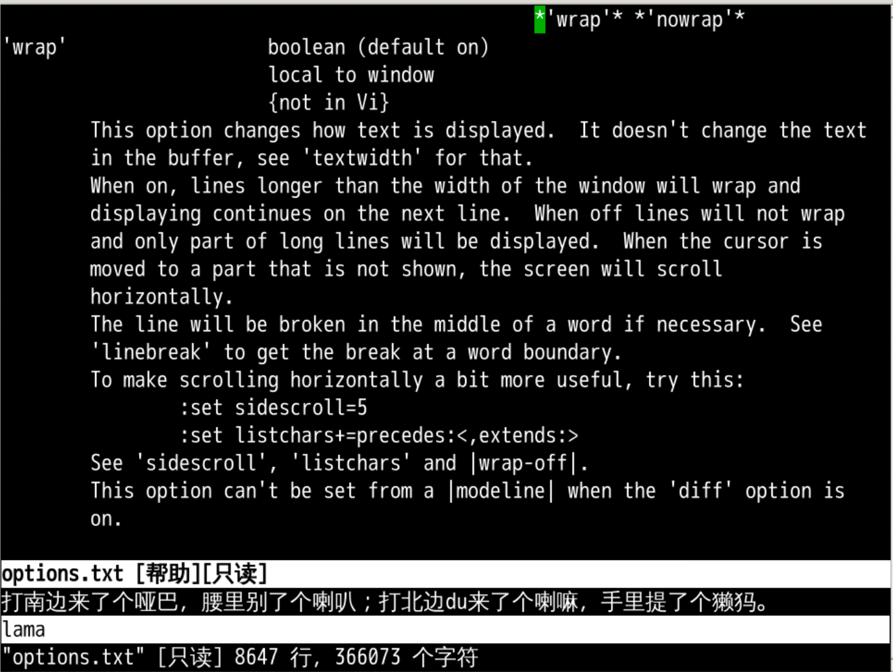
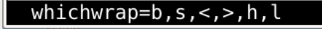
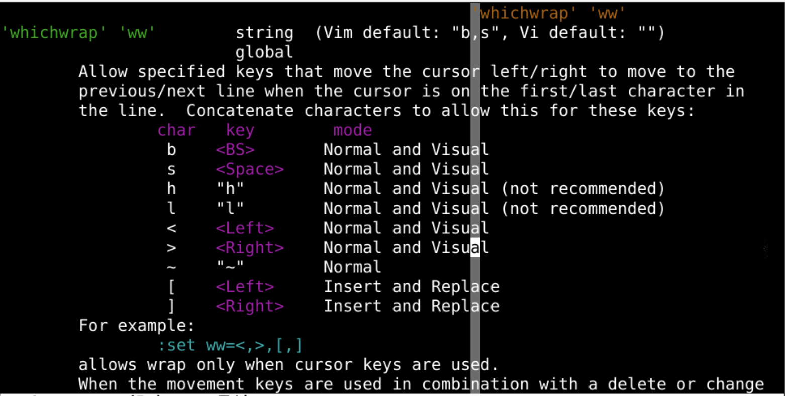
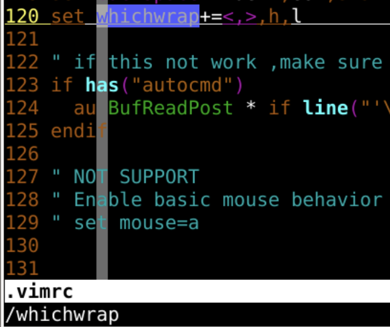

水平移动
回忆上节课内容🤔
- 根据扩展名我们可以设置某些特定类型文件的配置
- 相关文件类型的设置放在相应的文件夹里
- 文件类型缩进文件夹
/usr/share/vim/vim81/indent/
- 文件类型语法高亮文件夹
/usr/share/vim/vim81/syntax/
- 文件类型插件文件夹
- 系统通用文件夹
/usr/share/vim/vim81/ftplugin/java.vim/usr/share/vim/vim81/ftplugin/java_xxx.vim/usr/share/vim/vim81/ftplugin/java/xxx.vim
- 用户专用插件文件夹
~/.vim/ftplugin/java.vim~/.vim/ftplugin/java_def.vim~/.vim/ftplugin/java/header.vim
- 系统通用文件夹
- 在 文件夹
~/.vim/ftplugin中 的html.vim的设置- 只针对
html - 包括文件的缩进、配色、语法高亮、行号、状态栏等
- 只针对
:filetype indent on文件类型缩进生效:filetype syntax on文件类型语法高亮生效:filetype plugin on文件类型插件生效

素材文件
- 首先我们打开一个绕口令
git clone http://github.com/overmind1980/oeasyvim.gitvi -u NONE raokouling.txt- 打开绕口令
- 需要单行的长度超过 80 个字符
- 设置不换行
:set nowrap
- 设置状态条
:set statusline=%f-[%l,%c]:set laststatus=2
- 把模式设置为非兼容
:set nocompatible

横向滚动
- 一路l 到屏幕的尽头
- 到 [1,80] 时候再按下 l
- 整个屏幕发生横向滚动
- 然后光标移动到屏幕中心位置
- 光标坐标显示为 [1,81]
- 如果要回来的话也需要移动到左边缘
- 然后再按 h️
- 整个屏幕滚动回来了

- 反复横跳
横滚幅度
- 横滚的幅度可以通过
sidescroll来控制- 默认 0 是横向屏幕 80 字符的一半 40 字符
- 如果我设置为 10 的话
- 在最右边缘再向右的话，屏幕位置滚动 10 个字符
- 从 [1,80] 到 [1,81] 的时候发生
:h sidescroll

- 我们如果把
sidescroll变成 1，屏幕横滚就会很柔和🤪 - 还是设置回10吧
- 反复横跳
横滚留位
- 每次我们的横滚都是在屏幕边缘发生的
- 能否到达边缘之前就能看见那边有什么？
:h sidescrolloff- 默认是 0，到边缘才滚动
- 如果我们设置为 20
- 到 [1,60] 的时候,距离有边缘有 20
- 这个时候 l️整个屏就会向右
滚动幅度 - 也就是
sidescroll所对应的10

- 把
sidescrolloff设置成 99，光标在横向总在中心位置🤪
横滚屏快键

- 其实横向滚动我们用的比较少
- 但在一屏中滚动比较常见
屏内跳转

- 可以参照全屏跳转
- 前面加个 g
- g0 就是跳到屏幕第一个字符
- g^ 就是本屏幕内第一个非空字符
- gm 跳到屏幕中间
- gM 跳到整个文本中间
- g$ 跳到屏幕末尾
自动换行
- 如果一行太长了我们可以让他
:set wrap自动换行 :h wrap可以查看帮助手册📕:set nowrap可以取消自动换行

向上一行
- 我们一般用 j、k 上下移动
- 但是如果自动换行之后，这上下就不只是一行了
- 先把行号显示出来
:set nu - 我们可以通过 g j、g k 来自动换行的一行内上下移动
换行字符
- 我在行头句尾的时候
- 如果我想按方向键 h、l 换行
- 结果是有效的
- 如果我用 BackSpace
- 结果是有效的
- 但是有的机器上，却无效
- 为什么呢？
- 这是一个属性option
whichwrap- 先看看这个东西现在的值
:set whichwrap?

- 把他设置回默认的值
:set whichwrap&&表示设置为默认值- 然后再观察现状
- b,s 是什么意思呢
选项细节
:h 'whichwrap'

- 默认只有两个
- b 是
退格 - s 是
空格
- b 是
- 理论上h、l 不好使
vi oeasy.java- 重新用vi打开
- h、l 好使
- 那他是在那里设置了 h、l 呢？
查找根源
vim ~/.vimrc
/whichwrap

总结
- 我们这次了解了横向滚动的相关信息
- 横滚幅度 -
sidescroll - 横滚留位 -
sidescrolloff - 自动换行 -
wrap
- 横滚幅度 -
- g j、g k 可以逐行上下移动
- 可以控制切换行的控制键
whichwrap - 这就是横向移动的内容
- 不过程序中一般一行不会超过80个字符
- 纵向移动更为普遍
- 纵向移动有什么好玩的吗？🤔
- 下次再说 👋